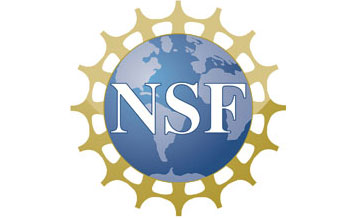

Ricardo Borsoi
CNRS researcher
University of
Lorraine

Scholar profile
Github projects

Projects
AGDAM: Learning from Large Datasets - Application to Multi-Subject fMRI Analysis
PIs : Tulay Adali (NSF), Sebastian Miron (ANR)
Duration: 2024 - 2027
Budget: 328 k€ (ANR), 600 k USD (NSF)
Funding: ANR-NSF collaborative proposal, grant number ANR-23-CE94-0001 / NSF 2316420
Context and summary
In many disciplines today, there is an increasing availability of multiple and complementary data associated with a given problem, and the main challenge is extracting and effectively summarizing the relevant information from these large number of datasets. Joint decomposition of these datasets, arranged as matrices or tensors, provides an attractive solution to data fusion by letting them fully interact and inform each other and yields factor matrices that are directly interpretable, where the resulting factors (components) are directly associated with quantities of interest. This research will provide a powerful solution for inference from large-scale data by effectively summarizing the heterogeneity in large datasets through the definition of homogeneous subspaces such that components within a subspace are highly dependent. The success of the methods will be demonstrated through identification of homogeneous subgroups of subjects from neuroimaging data, thus enabling personalized medicine whose goal is to tailor intervention strategies for a given individual. Effectively summarizing information in large-scale datasets is at the heart of many of today's challenging problems, hence the new set of tools will impact numerous areas in science and technology, including those in medical imaging, remote sensing, image/video processing, communications, and social networks.
Independent vector analysis (IVA) and coupled tensor factorizations are two powerful ways for working with spatio-temporal data, each exploiting the structural dependence information through different mechanisms. They also provide strong uniqueness guarantees, which is key for interpretability. This project leverages the complementary strengths of IVA and coupled tensor decompositions to develop a powerful framework for joint analysis/fusion of a large number of datasets through automated identification of homogeneous subspaces along with the components within these subspaces. This is accomplished by initially developing effective solutions to the problem with IVA and with coupled tensor decompositions, working in parallel. Then, in a second stage, the connections between these two approaches are established, both in terms of methods and uniqueness conditions, to develop a methodology that leverages the strengths of both approaches. The emphasis on uniqueness and interpretability of the solutions together with an application to a challenging dataset will ensure that the methods, as well as the developed theoretical foundations, are not only complete but also practically useful. Another important aspect of the work is the establishing of bridges across two communities that do not necessarily communicate. The work will demonstrate that statistically and algebraically motivated approaches to data fusion are not in competition with each other but have important complementary aspects that can be effectively leveraged. In addition, a clear view of their connections as well as differences enables fair comparisons of all methods clearly highlighting their abilities together with their limitations. This will help establish a solid and well-balanced foundation for the growing fields of data science and machine learning.
Collaborators
Ricardo Borsoi (CRAN, CNRS), David Brie (CRAN, Univ. Lorraine), Vince Calhoun (TReNDS; GSU, GAtech, Emory).
Jobs
There are multiple open positions (PhD, postdoc and internship) related to this project. If you are interested, contact us by email, joining a CV and a brief statement of interest.
 |
|  |
{kind=link}